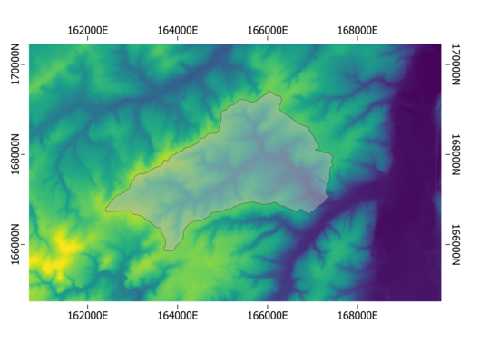
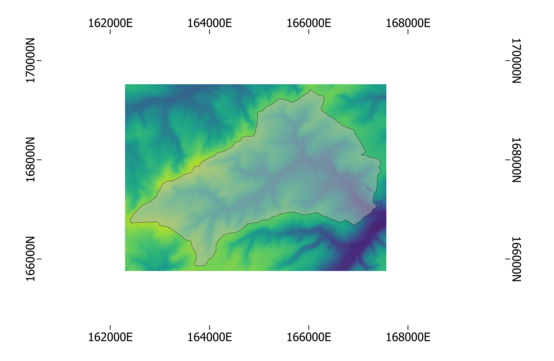
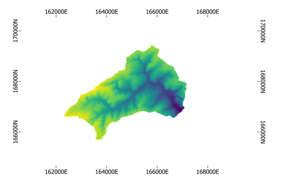

Geo-module¶
Introduction¶
The pywatemsedem package makes use of a number of GDAL and SAGA command line
operators to process raster data (for reasons of processing speed). In order
to cope with this file-based system, but still make use of numpy arrays for
processing in Python, a pywatemsedem.geo.rasters.RasterFile and
pywatemsedem.geo.rasters.RasterMemory class is
implemented. The aim of these engines is to couple raster file/numpy arrays to
specific raster properties. Second, this engine aims to perform simple
clipping and masking for input data. Third, this engine makes use of a class
pywatemsedem.geo.rasterproperties.RasterProperties, which aims to enable
easy switch between raster geographic references of gdal and rasterio,
respectively named gdal_profile and rasterio_profile.
The aim of this tutorial is to examplify the use of the
pywatemsedem.geo.rasterproperties.RasterProperties
and the pywatemsedem.geo.rasters.RasterFile class. Note that the example
files in this tutorial can be found in pywatemsedem/pywatemsedem/test/geo/data.
For this example, we assume we have a raster available which defines the geographical boundaries, the resolution (20 m) and coordinate system (in this case Lambert72, i.e. EPSG:31370) of your model:
{kind=link}
Defining the raster properties for this raster can be done by:
# imports
from pywatemsedem.geo.utils import load_raster
from pywatemsedem.geo.rasterproperties import RasterProperties
from pathlib import Path
# input file
input_folder = Path(r"$YOURINPUTFOLDER")
file_path = input_folder / "example_input_raster.tif"
# load raster and rasterio profile
arr, rasterio_profile = load_raster(file_path)
# define rasterproperties with rasterio profile
rp = RasterProperties.from_rasterio(rasterio_profile)
print(f"bounds: {rp.bounds}")
print(f"epsg: {rp.epsg}")
print(f"resolution: {rp.resolution}")
print(f"nodata: {rp.nodata}")
The instance rp of the class
pywatemsedem.geo.rasterproperties.RasterProperties can now be used te
define the extent of other rasters with the help of the class
pywatemsedem.geo.rasters.RasterFile.
Yet, before we do so, we first want to narrow our spatial domain by clipping
a part of the input raster. We do this by defining left x boundary, lower y
boundary, right x boundary and upper y boundary by the values
162300, 165760, 167560 and 169520 respectively (keeping in mind the coordinate
system Lambert72 and a resolution of 20 m):
bounds = [162300, 165760, 167560, 169520]
resolution = 20
nodata= -9999
epsg = 31370
rp = RasterProperties(bounds, resolution, nodata, epsg)
print(f"bounds: {rp.bounds}")
print(f"epsg: {rp.epsg}")
print(f"resolution: {rp.resolution}")
print(f"nodata: {rp.nodata}")
Rasters¶
We have now predefined our geospatial context, and we want to clip our input
according to this definition using
pywatemsedem.geo.rasters.RasterFile-engine:
# imports
from pywatemsedem.geo.rasters import RasterFile
# clip
raster = RasterFile(file_path, rp=rp)
# rp (and properties) is an attribute of the raster
print(raster.rp.bounds)
Which results to:
{kind=link}
Do note that if no pywatemsedem.geo.rasterproperties.RasterProperties
rp is defined, no clipping will occur:
raster = RasterFile(file_path)
print(raster.rp.bounds)
And in addition, note that using incorrect bounds as follows:
rp_ = RasterProperties([230, 760, 560, 1000], 20, -9999, 31370)
raster = RasterFile(file_path, rp=rp_)
will lead to an error:
Error
Clipped output raster is empty. Make sure your input raster covers your defined spatial extent (bounds: [230, 760, 560, 1000], resolution: 20, espg: EPSG:31370).
Masking with a (1, 0)-array is also available. The ones indicate no masking, the zeros indicate masking.
from pywatemsedem.geo.utils import vct_to_rst_field
rst_mask = Path(input_folder) / "mask.tif"
mask = RasterFile(rst_mask)
Masking can easily be done as follows:
raster = RasterFile(file_path, arr_mask=mask.arr)
or
raster = RasterFile(file_path)
raster.mask(mask.arr)
We want to write our result to disk (note that the raster format should be defined):
raster.write("output.tif",format="tiff)
You can write it to an idrisi raster:
raster.write("output.rst",format="idrisis")
You can also raise an error when format and extension do not overlap:
raster.write("output.rst",format="tiff")
Error
Can not write file (‘output.rst’) in format ‘tiff’ with ‘.rst’ extension.
Or make a nice plot the result while ignoring nodata values:
raster.plot(nodata=nodata)
Our result should look like:
{kind=link}
Besides static plots, also interactive plots can be made as follows:
raster.hv_plot(nodata = nodata)
Remark that coordinate system has changed to WGS 84 (EPSG:4326). The interactive features (such as zooming, hovering…) are only accessible in a Jupyter Notebook environment.
Note
In order to use the hv_plot functionality, one has to install hvplot and geoviews. See installation page.
The pywatemsedem.geo.rasters.RasterMemory class can be used in a
similar way:
from pywatemsedem.geo.rasters import RasterMemory
arr, profile = load_raster(file_path)
raster = RasterMemory(arr, RasterProperties.from_rasterio(profile))
raster.mask(mask.arr)
Do note that clipping in pywatemsedem.geo.rasters.RasterMemory is not
implemented in the current version.
Vectors¶
Similar to pywatemsedem.geo.rasters.RasterFile, one can make use
pywatemsedem.geo.vectors.VectorFile to define vector data:
from pywatemsedem.geo.vectors import VectorFile
input_folder = Path(r"$YOURINPUTFOLDER")
file_path = input_folder / "Wlas_langegracht.shp"
vector = VectorFile(file_path)
vector.plot()
and clip:
input_folder = Path(r"$YOURINPUTFOLDER")
file_path = input_folder / "Wlas_langegracht.shp"
file_path_clip = input_folder / "catchm_langegracht.shp"
vector = VectorFile(file_path,vct_clip=file_path_clip)
vector.plot()
with the option to rasterize to a pywatemsedem.geo.rasters.RasterFile-class
(using the mask as reference raster):
input_folder = Path(r"$YOURINPUTFOLDER")
reference_raster = input_folder / "mask.tif"
raster = vector.rasterize(reference_raster)
A numpy array is returned.